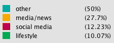

Our graph shows the network of the references from the most frequently read Hungarian news sites. We used categories, which are marked with colors in the graph. The network shows only 280 from the 4700 collected links of references.
Our main aim was to find out what pages one can get from certain news websites. In other words, we were interested in the network of references.
To collect the data we used a crawler in Python, for which a previously existing code was applied. The crawler collected data in the depth of four links, hence such websites are also present in the database that are extremely rare as references. The links were collected in January 2018. The data we visualized are the domains retrieved from the links in the texts of articles. For the visualization we also made a classifier (i.e. a calibrated decision tree) in Python that organized the various linked domains into categories. We stored the collected links in an SQLite database and with the help of Python we visualized it in Gephi. In order to make it interactive the GEXF JavaScript tool was utilized, for which we relied on a code that was already available and then improved.
The thickness of the edges shows the weight of the links between the nodes, the thicker the edges are the more references were collected between the two websites. The size of the nodes were visualized on the basis of their weighted Degree, even if Hungarian sites seem to have similar sizes comparing to such giants as Facebook. However, it is considered that the presented three hundred pages allow the careful observer to identify the network of Hungarian news websites that determine the flow of traffic of the Internet.
|  | Initial sites: origo, PestiSrácok, Magyar Idők, 888.hu, 444.hu, index, HVG, Átlátszó, hirado.hu, vs, Magyar Narancs, 24.hu, Mandiner, Népszava, Népszabadság, Magyar Nemzet, Alfahír, Kurucinfo, Azonnali, Mérce, Kettős Mérce, 168óra |
Eszter Katona, Orsolya Putz, Virág Ilyés, Zoltán Varjú. Copyright © Precognox 2018